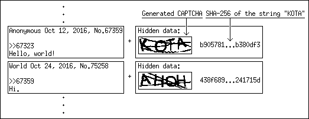
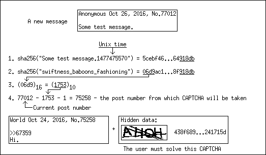

A concept of a decentralized CAPTCHA for ZeroNet. Contents: 1. Acknowledgment. 2. Rationale. 3. Algorithm. 4. Why not use only PoW? 5. Appendix. A chained structure of an imageboard. Acknowledgment. The core idea of described CAPTCHA mechanism (using PoW alongside with optical recognition CAPTCHA) was taken from nanoboard project. Rationale. I will propose a decentralized CAPTCHA mechanism using imageboard as example. But it is suitable not only for imageboards, of course, but for all kinds of forums, blogs, etc. "We have ZeroID. Why do we need CAPTCHA at all? A zite owner can easily ban evil users by their IDs and thus stop spam from them", you can say. Here my reasons why we need alternative to ZeroID: 1. ZeroID is centralized what is contradics the philosophy of ZeroNet. Yes, there are can be other identification sites. I consciously write "site", not "zite", because it works in an old centralized manner, you need a dedicated server which signs users certificates. Server can be hacked or DDoSed or seized by goverment and its owner arrested. Thus the whole project can be easily destroyed, it is only needed to take off the game a small number of people who runs identity sites. At this time there is only two identity issuers and this number will never be big, because if you create a new identity site you must convince all other people who runs zites to permit users to use identities from your site. Nobody will sign up at your site if they can not use issued identity everywere. 2. ZeroID facilitates a mass surveillance. You posts on imageboard can be easily linked together. And even linked with other posts on ZeroTalk or your account on ZeroMe, if you are not using different identities for every zite. You must use new IDs for every post on imageboard to be anonymous which is inconvenient. These problems can be solved by using self-signed certificates for every new post to protect anonymity and proposed decentralized CAPTCHA to protect imageboard from spam. Self-signed certificates implementation you can see on Nanasi text board. Algorithm. I will warn you from the beginning that for this system to work there are must be strict chronological order of posts on an imageboard. This means that no one can alter date of his previous posts or their content. I think this is a good feature by itelf and must be implemented by default. How to implement this is a topic for another article, but I've proposed one possible solution in the Appendix. Now let's pass through all steps of proposed algorithm of a decentralized CAPTCHA: 0. Each user when submits a new post generates a random CAPTCHA image. He automatically attach this image to his post and also a SHA-256 hash of the correct answer (Figure 1). This picture and hash obtained by other users but not displayed in their browsers. Probably it will be a good idea to add salt to the CAPTCHA answer to defend against rainbow tables.  Figure 1. Each post contains a CAPTCHA puzzle. 1. When somebody wants to publish a new post, he must calculate the hash of his post content and current Unix time. 2. Then goes proof-of-work (PoW). The user takes the last five HEX digits from this hash and must find another string which hash ends in the same five HEX digits. I wrote a simple program in Python that can do it. 3. Then the user takes the first four HEX digits from the hash of the string found in previous step and converts it to decimal. This number will determine the number of the post which contains a CAPTCHA to solve. Counting starts from this message number and goes backwards (Figure 2).  Figure 2. This is how CAPTCHA for a new post is chosen. 4. User solves the CAPTCHA. He compares hash of his answer with received hash. If this two hashes equal then the user announces his message to everybody. If the user can not solve CAPTCHA, then he repeats PoW, finds a new string and gets a new CAPTCHA. 5. Other users download this message, check PoW and CAPTCHA and if it is alright, announce message further. If the imageboard is new, then the first 65536 CAPTCHA images must create its owner. Why not use only PoW? Some expert users can do PoW on GPU, gaining thousands of times much power than regular users. If a regular user can post only one post in one second, an attacker can create thousands of posts in one second flooding imageboard with spam. On the other side with this decentralized algorithm attacker on average must perform 32768 PoW to get one particular CAPTCHA. On the other hand a regular user can solve almost every CAPTCHA and usually performs only one PoW. Appendix. A chained structure of an imageboard. To prevent users to change their old messages (change their date or content), each message must contain the hash of a previous message. Thus if a new message arrives and it claims that it is some old message (someone trying to insert this message between old posts) it will be rejected. If the owner of imageboard wants to grant users the right to alter content of their messages (and accordingly to delete them), than the message content will not be included in the hash calculation.